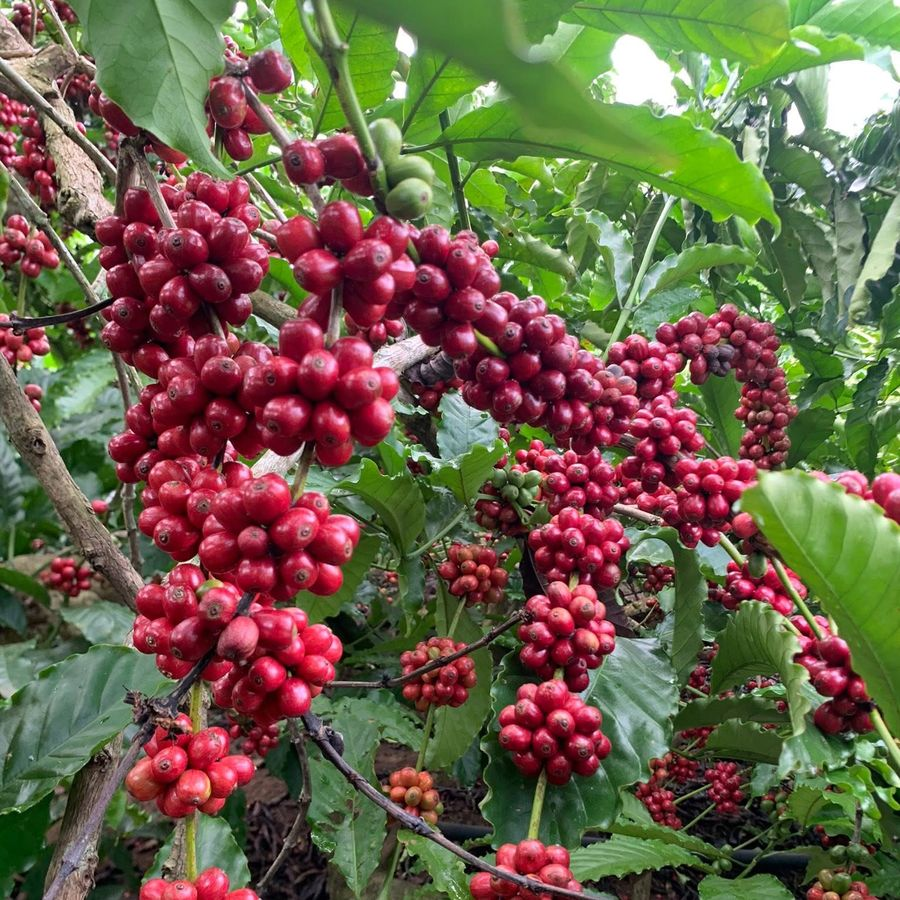
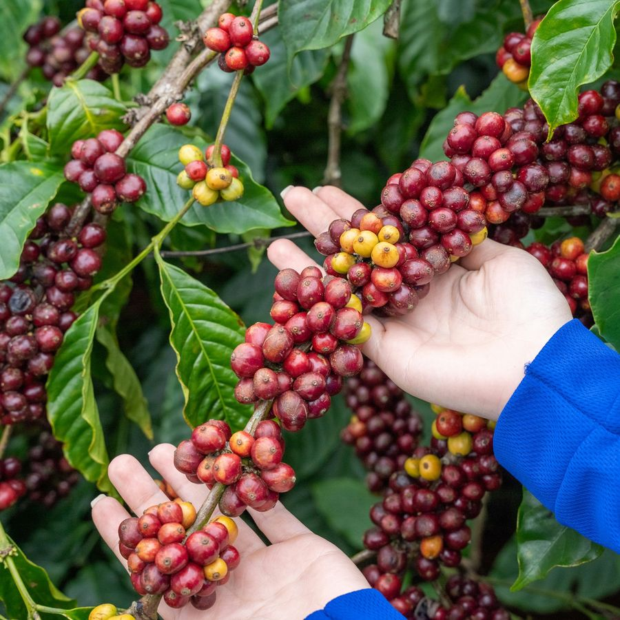

Vườn 12 Tháng MeDili
Một năm chăm vườn Robusta Cà Sẻ Di Linh 15 năm tuổi theo hướng tự nhiên: hữu cơ làm nền, phân hoá học bổ sung vừa đủ. Chọn tháng để xem vườn thay đổi, việc cần làm, phân, nước, công và sản lượng trái tươi.
Vườn vào mùa
Robusta chín đỏ, thu hái rồi phơi.



Ước tính từ các thông số bên phải. Số trái dựa trên giả định 650 trái/kg, chị nên đếm thực tế: lấy 1 kg trái chín, đếm và sửa lại.
| Đợt hái | Thời gian | Tỷ lệ | Trái tươi / ha | Công / ha | Yêu cầu |
|---|
Lịch 12 tháng cho 1 ha
Bấm một hàng để xem tháng đó trên vườn. Lượng phân thay đổi theo mức giảm hoá học ở bàn điều khiển. Ngày thực tế tuỳ thời tiết năm đó.
| Tháng | Giai đoạn | Việc chính | Hữu cơ, vi sinh | Phân khoáng (kg/ha) | Nước (m³/ha) | Công |
|---|
Bón phân: tự nhiên kết hợp
Lượng khuyến cáo là mức tối đa nên cân nhắc. Đo đất từng lô mới biết giảm được bao nhiêu.
| Dưỡng chất, kg/ha | Kiểu phổ biến Lâm Đồng | Khuyến cáo | MeDili | Phân thương phẩm |
|---|
Chi phí 1 năm
Đơn giá là ví dụ để so sánh. Chị nhập giá mua thật của mình.
Chưa gồm khấu hao, tiền đất, sơ chế, vận chuyển, thuế và công quản lý. Giá nhân ví dụ 89.000 đ/kg lấy theo Lâm Đồng ngày 27/10/2026, giá thay đổi hằng ngày.
Lỗi hay gặp
| Dấu hiệu | Nguyên nhân | Việc cần làm |
|---|
Phiếu vườn tháng này
Gửi cho tổ trưởng vườn theo tháng đang chọn.
Giới hạn cần giữ
- Đo đất trước. Lấy mẫu từng lô ở tháng 1, đo pH, chất hữu cơ, NPK. Vườn khác nhau thì lượng phân khác nhau.
- Giảm dần. Năm đầu giảm khoảng 20–30 %, theo dõi năng suất rồi mới giảm tiếp.
- Thuốc BVTV. Chỉ dùng khi vượt ngưỡng, đúng danh mục được phép, giữ đúng thời gian cách ly trước khi hái.
- Chưa gọi là hữu cơ. Vườn còn dùng phân khoáng thì chỉ nên nói "canh tác hướng tự nhiên", không ghi "organic" khi chưa có chứng nhận.
Nguồn tổng hợp. Vườn là mô hình minh hoạ. Lịch công việc, số công, tỷ lệ các đợt hái và đơn giá là ước tính lập kế hoạch cho Di Linh, chưa phải số đo của vườn MeDili. Nên nhờ cán bộ khuyến nông địa phương rà lại.
Cà phê nguồn gốc Di Linh từ Medili Coffee Farm. Liên hệ qua Zalo để tìm hiểu vườn và cà phê.